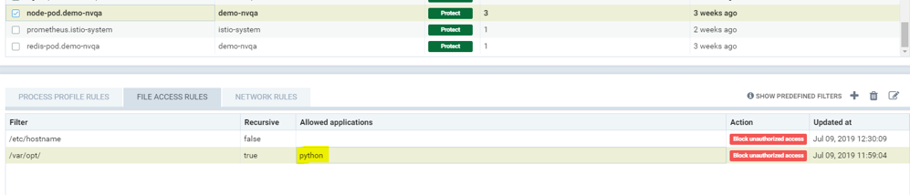

Regras de Acesso ao Arquivo
Política: Regras de Acesso ao Arquivo
Existem dois tipos de proteções de processo/arquivo em SUSE® Security. Uma é a Zero-drift, onde a atividade permitida de processos e arquivos é automaticamente determinada com base na imagem do contêiner, e a segunda é baseada em aprendizado comportamental. Cada uma pode ser personalizada (regras adicionadas manualmente) se desejado.
SUSE® Security possui detecção incorporada de atividade suspeita no sistema de arquivos. Arquivos sensíveis em contêineres normalmente não mudam em tempo de execução. Ao modificar o conteúdo dos arquivos sensíveis, um atacante pode obter privilégios não autorizados, como no ataque Dirty-Cow do kernel Linux, ou danificar a integridade do sistema, por exemplo, manipulando o arquivo /etc/hosts. A maioria dos contêineres não opera em modo somente leitura. Qualquer atividade suspeita em contêineres, hosts ou no próprio contêiner SUSE® Security aplicador será detectada e registrada nas Notificações → Eventos de Segurança.
Proteção de Arquivo Zero-drift
Este é o modo padrão para proteções de processos e arquivos. Zero-drift permite automaticamente apenas processos que se originam do processo pai que está na imagem original do contêiner, e não permite atualizações de arquivos ou a instalação de novos arquivos. Quando em modo Descoberta ou Monitor, o Zero-drift alertará sobre qualquer atividade suspeita de processo ou arquivo. No modo Proteger, ele bloqueará tal atividade. Zero-drift não requer que a atividade de arquivo seja adicionada a uma lista de permissões. Desabilitar o zero-drift para um grupo fará com que as regras de processo e arquivo listadas para o grupo entrem em vigor.
|
As regras de processo/arquivo listadas para cada grupo são sempre aplicadas, mesmo quando o zero-drift está habilitado. Isso oferece uma maneira de adicionar exceções de permissão/negação às proteções básicas de zero-drift. Tenha em mente que, se um grupo começar no modo Descoberta, regras de processo/arquivo podem ser adicionadas automaticamente à lista e devem ser revisadas e editadas antes de passar para os modos Monitorar/Proteger. |
A capacidade de habilitar/desabilitar o modo zero-drift está no console em Grupos de Política →. Vários grupos podem ser selecionados para alternar essa configuração para todos os grupos selecionados.
Proteções Básicas de Arquivo
Se uma instalação de pacote for detectada, uma nova verificação automática do contêiner ou host será acionada para detectar quaisquer vulnerabilidades, SE a verificação automática tiver sido habilitada em Riscos de Segurança → Vulnerabilidades.
Além de monitorar arquivos/diretórios predefinidos, os usuários podem adicionar arquivos/diretórios personalizados a serem monitorados e bloquear esses arquivos/diretórios de serem modificados.
|
SUSE® Security alertas, e não bloqueia modificações em arquivos/diretórios predefinidos ou em contêineres de sistema, como os do Kubernetes. O bloqueio é apenas uma opção para arquivos/diretórios personalizados configurados pelo usuário para contêineres não-sistema. Isso é para que atualizações regulares de pastas do sistema ou configurações sensíveis não sejam bloqueadas involuntariamente, resultando em comportamento errático do sistema. |
Os seguintes arquivos e diretórios são monitorados por padrão:
-
Arquivos executáveis
-
Arquivos sensíveis setuid/setgid
-
Bibliotecas do sistema, libc, pthread, …
-
Instalação de pacotes, Debian/Ubuntu, RedHat/CentOS, Alpine
-
Arquivos sensíveis do sistema, /etc/passwd, /etc/hosts, /etc/resolv.conf …
-
Arquivos executáveis de processos em execução
As seguintes atividades são monitoradas:
-
Arquivos, diretórios, symlinks (conexão física e link simbólico)
-
criados, excluídos, modificados (mudança de conteúdo) e movidos
Abaixo está uma lista do monitoramento do sistema de arquivos e o que é monitorado (contêiner, host/nó e/ou o próprio contêiner SUSE® Security aplicador):
-
/bin, /usr/bin, /usr/sbin, /usr/local/bin - contêiner, aplicador
-
Arquivos com atributo setuid e setgid - contêiner, host, aplicador
-
Bibliotecas: libc, pthread, ld-linux.* - contêiner, host, aplicador
-
Instalação de pacotes: dpkg, rpm, apk - contêiner, host, aplicador
-
/etc/hosts, /etc/passwd, /etc/resolv.conf - contêiner, host, aplicador
-
Binários dos processos em execução - contêiner
Aplicativos Permitidos baseados em Aprendizado Comportamental no Modo Descoberta
Quando no modo Descoberta, SUSE® Security pode aprender e colocar na lista branca aplicativos SOMENTE para diretórios ou arquivos especificados. Para habilitar o aprendizado, uma regra personalizada deve ser criada e a Ação deve ser definida como Bloquear, conforme descrito abaixo.
Criando Regras de Monitoramento de Arquivos/Diretórios Personalizadas
Regras de acesso a arquivos personalizadas podem ser criadas tanto para Grupos definidos pelo usuário quanto para Grupos aprendidos automaticamente.
Os usuários podem adicionar novas entradas para regras de arquivos/diretórios.
-
Filtro: Configure o arquivo/pasta a ser protegido (coringas são suportados)
-
Defina a flag recursiva (se todos os arquivos nos subdiretórios devem ser protegidos)
-
Selecione a ação, Monitorar ou Bloquear (veja Ações abaixo)
-
Insira aplicativos permitidos (veja Nota1 abaixo)

Ações:
-
Monitore alterações de arquivos. Gere alertas (Notificações) para quaisquer alterações
-
Bloquear acesso não autorizado.
-
Serviço no modo Descoberta: o comportamento de acesso ao arquivo é aprendido (os processos/aplicativos que acessam o arquivo protegido) e adicionado às Aplicações Permitidas.
-
Serviço no modo Monitor: comportamento inesperado do arquivo é alertado.
-
Serviço no modo Proteger: acesso inesperado (leitura, modificação) é bloqueado. A criação de novos arquivos em pastas protegidas também será bloqueada.
-
|
Se a regra estiver definida para Bloquear, e o serviço estiver no modo Descoberta, SUSE® Security aprenderá os aplicativos que acessam o arquivo e os adicionará às Aplicações Permitidas para a regra. |
|
Plataformas de contêiner que executam o driver de armazenamento AUFS não suportarão a ação de negar (bloquear) no modo Proteger para criar/modificar arquivos devido às limitações do driver. O comportamento será o mesmo que no modo Monitor, alertando sobre atividades suspeitas. |
Ordem de precedência da regra de acesso ao arquivo.
Um contêiner pode herdar regras de acesso ao arquivo de múltiplos grupos personalizados e regras de acesso ao arquivo criadas pelo usuário no grupo aprendido automaticamente.
As regras de acesso ao arquivo são priorizadas na ordem abaixo se o nome de arquivo conflitar com regras de acesso predefinidas do grupo aprendido automaticamente e herança de regras de múltiplos grupos.
-
Regra de acesso ao arquivo com bloqueio de acesso (maior prioridade).
-
Regra de acesso ao arquivo com recursão habilitada.
-
Regra de acesso ao arquivo com recursão desabilitada.
-
Regra de acesso ao arquivo criada pelo usuário, diferente das regras de acesso ao arquivo predefinidas.
Exemplos
Mostrando a regra de acesso ao arquivo para proteger o arquivo /etc/hostname do serviço node-pod e permitir que o aplicativo vi modifique o arquivo.

Mostrando a regra de acesso ao arquivo para proteger arquivos sob o diretório /var/opt/ recursivamente para modificação e leitura. O aplicativo permitido python pode ter acesso de leitura e modificação a esses arquivos.

Mostrando a regra de acesso que protege o arquivo /etc/passwd, que é um dos arquivos cobertos pela regra de acesso predefinida, a fim de modificar a ação de acesso ao arquivo, tanto para modificação quanto para leitura. Esta regra personalizada altera a ação padrão da regra de acesso ao arquivo predefinida. O aplicativo Nano pode ter acesso de 'leitura e modificação' a esses arquivos. Também é necessário adicionar o aplicativo Nano (processo) como uma regra de 'permitir' na regra do perfil de processo para que este serviço execute o aplicativo Nano dentro do serviço (se ainda não estiver na lista de permissões), caso contrário, o processo será bloqueado por SUSE® Security.

Mostrando que o aplicativo python foi aprendido acessando o arquivo no diretório /var/opt quando o modo de serviço do node-pod estava em Descoberta. Isso ocorre apenas quando a regra está definida como Bloquear e o serviço está no modo Descoberta.

Mostrando regras de acesso a arquivos predefinidas para o serviço node-pod.demo-nvqa. Isso pode ser visualizado para este serviço clicando no ícone de informações “show predefined filters” no canto direito da aba de regras de acesso a arquivos.

Mostrando um evento de segurança de amostra em Notificações → Eventos de Segurança, alertado como Negação de acesso a arquivo quando a modificação do arquivo /etc/hostname pelo aplicativo python foi negada devido a uma regra de acesso a arquivo personalizada com ação de bloqueio.


Proteções de Arquivo em Modo Dividido
Grupos de contêineres podem ter regras de processo/arquivo em um modo diferente das regras de rede, conforme descrito aqui.